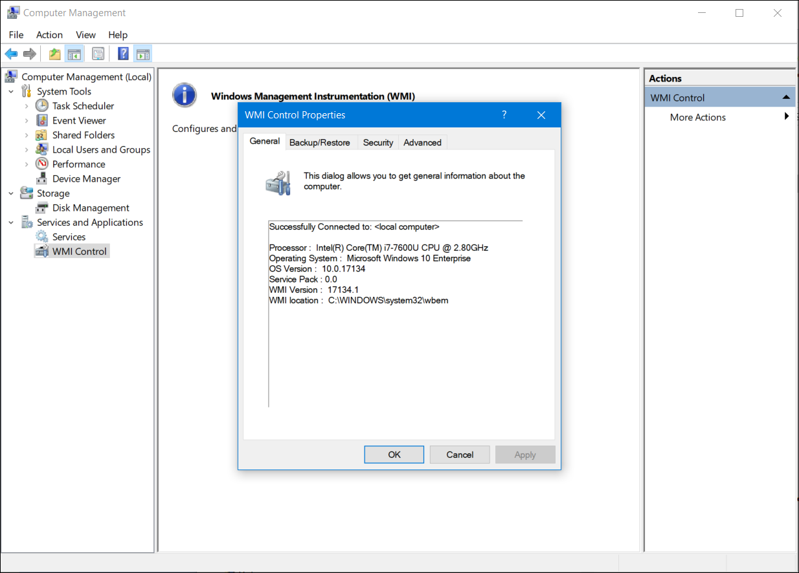

3.3.1 Ejecutar como administrador
Como mejor práctica de seguridad, no es recomendable iniciar sesión en Windows utilizando la cuenta de administrador o una cuenta con privilegios administrativos. Esto se debe a que cualquier programa que se ejecute cuando inicie sesión con esos privilegios los heredará. El malware con privilegios administrativos tiene acceso completo a todos los archivos y carpetas en la computadora.
En ocasiones es necesario ejecutar o instalar software que requiere los privilegios de un Administrador. Para lograr esto, hay dos diferentes formas de realizar la instalación.
| Administrador |
|---|
| Haga clic con el botón derecho en el Explorador de archivos de Windows y elija Ejecutar como administrador en el menú contextual. |
 |
| Administrador Command Prompt |
|---|
| Haga clic con el botón derecho en el Explorador de archivos de Windows y elija Ejecutar como administrador en el menú contextual. |
 |
3.3.2 Usuarios y dominios locales
Cuando se inicia una nueva computadora por primera vez, o al instalar Windows, el sistema solicita la creación de una cuenta de usuario. Esta se conoce como “usuario local”. Esta cuenta contiene todos los ajustes de personalización, los permisos de acceso, las ubicaciones de archivos y muchos otros datos específicos del usuario. Hay también otras dos cuentas: de invitado y de administrador. Ambas están deshabilitadas de manera predeterminada.
Como una mejor práctica de seguridad, no debe habilitarse la cuenta de administrador ni otorgarles privilegios administrativos a los usuarios estándar. Si un usuario necesita realizar cualquier función que requiera privilegios administrativos, el sistema solicitará la contraseña de administrador y permitirá realizar como administrador solamente la tarea específica. Requerir la contraseña de administrador protege la computadora al evitar que cualquier software que no esté autorizado instale, ejecute o acceda a archivos.
No debe habilitarse la cuenta de invitado. La cuenta de invitado no tiene una contraseña, ya que se crea cuando una computadora será utilizada por muchas personas diferentes que no tienen cuentas propias. Cada vez que se inicia sesión con la cuenta de invitado, se proporciona un entorno predeterminado con privilegios limitados.
Para facilitar la administración de usuarios, Windows utiliza grupos. Un grupo tendrá un nombre y un conjunto específico de permisos asociados con él. Cuando se coloca a un usuario en un grupo, los permisos de ese grupo se le otorgan a ese usuario. Se puede colocar a un usuario en varios grupos con muchos permisos diferentes. Cuando se superponen los permisos, algunos de ellos (como “denegar explícitamente”) anulan los permisos otorgados por otro grupo. Hay muchos grupos de usuarios diferentes integrados en Windows que se utilizan para tareas específicas. Por ejemplo, el grupo de usuarios del registro de rendimiento les permite a los miembros programar el registro de contadores de rendimiento y recopilar registros de manera local o remota. Los usuarios y grupos locales se administran con el applet del panel de control lusrmgr.msc, como se muestra en la figura

Además de grupos, Windows también puede utilizar dominios para establecer permisos. Un dominio es un tipo de servicio de red en el que todos los usuarios, grupos, computadoras, periféricos y ajustes de seguridad se almacenan en una base de datos, que también los controla. Esta base de datos se almacena en computadoras o grupos de computadoras especiales que se denominan controladores de dominio (DC, Domain Controller). Cada usuario y computadora en el dominio deben autenticarse con el DC para iniciar sesión y tener acceso a los recursos de red. El DC establece la configuración de seguridad para cada usuario y cada computadora en cada sesión. Cualquier ajuste suministrado por el DC se aplica de manera predeterminada en la configuración de cuenta de usuario o computadora local.
3.3.3 CLI y PowerShell
La interfaz de línea de comandos (Command Line Interface, CLI) de Windows se puede utilizar para ejecutar programas, navegar por el sistema de archivos y administrar archivos y carpetas. Además, pueden crearse archivos denominados archivos por lotes para ejecutar varios comandos seguidos, algo muy parecido a un script básico.
Para abrir el CLI de Windows, busque cmd.exe y haga clic en el programa. Es necesario recordar que hacer clic derecho el programa ofrece la opción de ejecutar como administrador, lo que les otorga mucho más poder a los comandos que se utilizarán.
El indicador permite ver la ubicación actual en el sistema de archivos. Estas son algunas sugerencias para recordar cuando se usa la CLI:
A pesar de que la CLI tiene muchos comandos y características, no puede trabajar en conjunto con el núcleo de Windows o la GUI. Se puede utilizar otro entorno, llamado Windows PowerShell, para crear script con el fin de automatizar tareas que la CLI común no puede crear. PowerShell también proporciona una CLI para iniciar comandos. PowerShell es un programa integrado en Windows que se puede abrir buscando la palabra "powershell" y haciendo clic en el programa. Como la CLI, PowerShell también se puede ejecutar con privilegios de administrador.
Estos son los tipos de comandos que puede ejecutar PowerShell:
Para obtener más información sobre Windows PowerShell y comenzar a usarlo, escriba help en PowerShell, como se ve en la salida del comando.

Hay cuatro niveles de ayuda de Windows PowerShell:
3.3.4 Instrumentación de Administración Windows
Instrumentación de Administración Windows (WMI) se utiliza para administrar computadoras remotas. Puede recuperar información sobre componentes de la computadora, brindar estadísticas de hardware y software, y monitorear el estado de computadoras remotas. Para abrir el control WMI desde el Panel de control, haga doble clic en Herramientas administrativas > Administración de equipos para abrir la ventana Administración de equipos, expanda el árbol Servicios y aplicaciones y haga clic con el botón derecho en el icono Control WMI > Propiedades.
La ventana Propiedades de Control WMI se ve en la figura.

Estas son las cuatro fichas en la ventana Propiedades de Control WMI:
Actualmente, algunos ataques utilizan WMI para conectarse con sistemas remotos, modificar el registro y ejecutar comandos. WMI ayuda a los atacantes a evitar la detección porque el tráfico es común, los dispositivos de seguridad de red suelen confiar y los comandos de WMI remotos no suelen dejar rastro en el host remoto. Debido a esto, el acceso a WMI debe limitarse al máximo.
3.3.5 El comando net
Windows tiene muchos comandos que se pueden introducir en la línea de comando. Un comando importante es el comando net, que se usa en la administración y el mantenimiento del sistema operativo. El comando net puede soportar muchos otros comandos, que siguen el net y puede combinarse con switches para concentrarse en resultados específicos.
Para ver una lista de los numerosos net comandos, escriba net help en el command prompt. La comando output muestra los comandos que puede utilizar el net comando. Para ver ayuda detallada sobre cualquiera de los comandos net, escriba C:> net help como se muestra abajo.

La tabla enumera algunos comandos comunes net.
| Comando | Descripción |
|---|---|
| net session | Define los requisitos de contraseñas e inicio de sesión para los usuarios |
| net session | Enumera o desconecta las sesiones entre una computadora y otras computadoras de la red |
| net share | Crea, elimina o administra recursos compartido |
| net start | Inicia un servicio de red o enumera los servicios de red en ejecución |
| net stop | Detiene un servicio de red |
| net use | Conecta, desconecta los recursos de red compartidos, y permite ver información sobre ellos |
| net view | Muestra una lista de las computadoras y los dispositivos de red en la misma |
3.3.6 Administrador de tareas y Monitor de recursos
Hay dos herramientas muy importantes y útiles para ayudar a un administrador a entender la enorme y variada cantidad de aplicaciones, servicios y procesos que se ejecutan en una computadora con Windows. Estas herramientas también proporcionan información sobre el rendimiento de la computadora, como el uso de CPU, memoria y red. Estas herramientas son especialmente útiles al investigar un problema donde hay sospechas de malware. Cuando un componente no está funcionando de la manera en que debería, estas herramientas pueden utilizarse para determinar cuál puede ser el problema.
Administrador de tareas
El Administrador de tareas ofrece mucha información sobre el software que se está ejecutando y el rendimiento general de la computadora.

En la tabla se describen las siete fichas del Administrador de tareas.
| Fichas del Administrador de tareas | Descripción |
|---|---|
| Proceso |
|
| Rendimiento |
|
| Historial de aplicaciones |
|
| Inicio |
|
| Usuarios |
|
| Detalles |
|
| Servicios |
|
Monitor de recursos
Cuando se necesita información más detallada sobre el uso de recursos, es posible utilizar el Monitor de recursos, como se muestra en la figura.

Si la computadora se comporta de manera extraña, el Monitor de recursos puede ayudar a encontrar el origen del problema.
En la tabla se describen las cinco fichas del Monitor de recursos.
| Pestañas del Monitor de recursos | Descripción |
|---|---|
| Descripción general |
|
| CPU |
|
| Menoria |
|
| Disco | En esta pestaña se muestran todos los procesos que están usando un disco, con estadísticas de lectura / escritura y una descripción general de cada dispositivo de almacenamiento. |
| Red |
|
3.3.7 Redes
Una de las características más importantes de cualquier sistema operativo es la capacidad de la computadora de conectarse a una red. Sin esta característica, no hay acceso a los recursos de red o a Internet. Para configurar las propiedades de redes de Windows y probar la configuración de redes, se emplea el Centro de redes y recursos compartidos. La manera más sencilla de ejecutar esta herramienta es buscarla y hacer clic en ella. Utilice el Centro de redes y recursos compartidos para verificar o crear conexiones de red, configurar el uso compartido de red y cambiar la configuración del adaptador de red.
Centro de redes y recursos compartidos

En la vista inicial, se ve un panorama general de la red activa. Esta vista permite ver si hay acceso a Internet y si la red es privada, pública o para invitados. También se ve el tipo de red (por cable o inalámbrica). Desde esta ventana, es posible ver el Grupo Hogar al que pertenece la computadora o crear uno si todavía no forma parte de uno. Esta herramienta también puede usarse para cambiar la configuración del adaptador o la configuración de uso compartido avanzado, establecer una nueva conexión o solucionar problemas. Tenga en cuenta que se eliminó HomeGroup de Windows 10 en la versión 1803.
Cambiar configuración del adaptador.
Para configurar un adaptador de red, es necesario seleccionar Cambiar configuración del adaptador en centro de redes y recursos compartidos a fin de ver todas las conexiones de red que están disponibles. Seleccione el adaptador que desea configurar. En este caso, cambiamos un adaptador Ethernet para adquirir su dirección IPv4 automáticamente de la red.
| 1. Propiedades de acceso del adaptador |
|---|
| Haga clic con el botón derecho en el adaptador que desee configurar y seleccione Propiedades, como se ve en la figura. |
 |
| 2. Acceder a las propiedades de TPC/IPv4 |
|---|
| Esta conexión utiliza Protocolo de internet versión 4 (TCP/IPv4) o Protocolo de internet versión 6 (TCP/IPv6) depende de la versión que el usuario desee utilizar. En la figura, IPv4 se está seleccionando. |
 |
| 3. Cambiar la configuración |
|---|
| Haga clic en Propiedades para configurar el adaptador. En el cuadro de diálogo Propiedades mostrado en la figura, puede optar por Obtener una dirección automáticamente si hay un servidor DHCP disponible en la red. Si desea configurar la dirección manualmente, puede completar la dirección, subred, puerta de enlace predeterminada y los servidores DNS para configurar el adaptador. Haga clic en Aceptar para aplicar los cambios. También puede usar la herramienta netsh.exe para configurar los parámetros de red desde una petición de ingreso de comando. Este programa permite ver y modificar la configuración de red. Escriba netsh /? en la petición de ingreso de comando para ver una lista de todos los modificadores que puede utilizar con este comando. |
 |
nslookup and netstat
Sistema de Nombres de Dominio (DNS) debe ser probado por que es esencial para encontrar la dirección de los hosts traduciéndola de un nombre, a una URL. Utilice el comando nslookup para probar DNS Escriba nslookup cisco.com en la petición de ingreso de comando para encontrar la dirección del servidor web de Cisco. Si se devuelve la dirección, significa que el DNS funciona correctamente. También es posible comprobar qué puertos están abiertos, donde están conectados y cuál es su estado actual. Escriba netstat en la línea de comando para ver los detalles de las conexiones de red activas, como se muestra en la salida del comando. Más adelante en este capítulo, el comando netstat se analizará en más detalle.

3.3.8 Acceso a los recursos de red
Al igual que otros sistemas operativos, Windows utiliza una red para varias aplicaciones diferentes, como web, correo electrónico y servicios de archivo. Microsoft ayudó en el desarrollo del protocolo bloque de mensajes del servidor (SMB, Server Message Block), originalmente diseñado por IBM, para compartir recursos de red. Principalmente, SMB se utiliza para tener acceso a archivos de hosts remotos. Para conectar recursos, se utiliza el formato de convención de nomenclatura universal (UNC, Universal Naming Convention), por ejemplo:
servernamesharename ile
En la UNC, servername es el servidor que aloja el recurso. Puede ser un nombre de DNS, un nombre de NetBIOS o, simplemente, una dirección IP. El elemento sharename corresponde a la raíz de la carpeta del sistema de archivos en el host remoto, mientras que file es el recurso que el host local intenta encontrar. Es posible que el archivo se encuentre en un nivel más profundo en el sistema de archivos, y es necesario indicar esta jerarquía.
Al compartir recursos en la red, se deberá identificar el área del sistema de archivos que se compartirá. Es posible aplicar el control de acceso a las carpetas y archivos para limitar a usuarios y grupos a funciones específicas, tales como leer, escribir o denegar. Windows también crea recursos compartidos especiales automáticamente. Estos recursos compartidos se denominan recursos compartidos administrativos. Un recurso compartido administrativo se identifica con el signo de dólar ($) que aparece después de su nombre. Cada volumen de disco tiene un recurso compartido administrativo, representado por la letra de volumen y el signo $ (por ejemplo, C$, D$ o E$). La carpeta de instalación de Windows se comparte como admin$, la carpeta de impresoras se comparte como print$, y hay otros recursos compartidos administrativos que se pueden conectar. Solamente los usuarios con privilegios administrativos pueden acceder a estos recursos compartidos.
La manera más sencilla de conectarse a un recurso compartido es escribir su UNC en el explorador de archivos de Windows, en el cuadro en la parte superior de la pantalla, donde se ve la ruta de navegación de la ubicación actual del sistema de archivos. Cuando Windows intenta conectarse al recurso compartido, solicita las credenciales para tener acceso a los recursos. Recuerde que, dado que el recurso está en una computadora remota, las credenciales deben ser las de la computadora remota, no las de la computadora local.
Además de acceder a recursos compartidos en hosts remotos, también puede iniciar sesión en un host remoto y manipular esa computadora, como si fuera local, para realizar cambios de configuración, instalar software o solucionar un problema. En Windows, esta función se conoce como Protocolo de escritorio remoto (Remote Desktop Protocol, RDP). Al investigar incidentes de seguridad, un analista de seguridad suele usar el RDP para tener acceso a computadoras remotas. Para iniciar el RDP y conectarse a una computadora remota, busque “escritorio remoto” y haga clic en la aplicación. En la figura, se ve la ventana Conexión a escritorio remoto.
Debido a que RDP está diseñado para permitir a los usuarios remotos controlar hosts individuales, es un objetivo natural para los actores de amenazas. Se debe tener cuidado al activar RDP, especialmente en versiones heredadas sin parches de Windows, como las que todavía se encuentran en los sistemas de control industrial. Se debe tener cuidado para limitar la exposición de RDP a Internet, y se deben usar enfoques de seguridad y políticas de control de acceso, como Zero Trust, para limitar el acceso a hosts internos.

3.3.9 Windows Server
La mayoría de las instalaciones de Windows se realizan como instalaciones de escritorio en equipos de escritorio y portátiles. En centros de datos se utiliza principalmente otra versión de Windows: Windows Server. Se trata de una familia de productos de Microsoft que empezó con Windows Server 2003. Windows Server aloja muchos servicios diferentes y puede cumplir diferentes roles dentro de una empresa.
Nota: Aunque hay un Windows Server 2000, se considera una versión de cliente de Windows NT 5.0. Windows Server 2003 es un servidor basado en NT 5.2 y es el precursor de una nueva familia de versiones de Windows Server.
Estos son algunos de los servicios que provee Windows Server:
3.3.10 Práctica de laboratorio - Crear cuentas de usuario
En esta práctica de laboratorio crearán y modificarán cuentas de usuario en Windows.
3.3.11 Práctica de laboratorio - Utilizar Windows PowerShell
El objetivo de esta práctica de laboratorio es estudiar algunas de las funciones de PowerShell.
3.3.12 Práctica de laboratorio - Administrador de tareas de Windows
En esta práctica de laboratorio, explorará el Administrador de tareas y administrará procesos desde allí.
3.3.13 Práctica de laboratorio - Monitorear y administrar recursos del sistema en Windows
En esta práctica de laboratorio, utilizará herramientas administrativas para controlar y administrar los recursos del sistema.